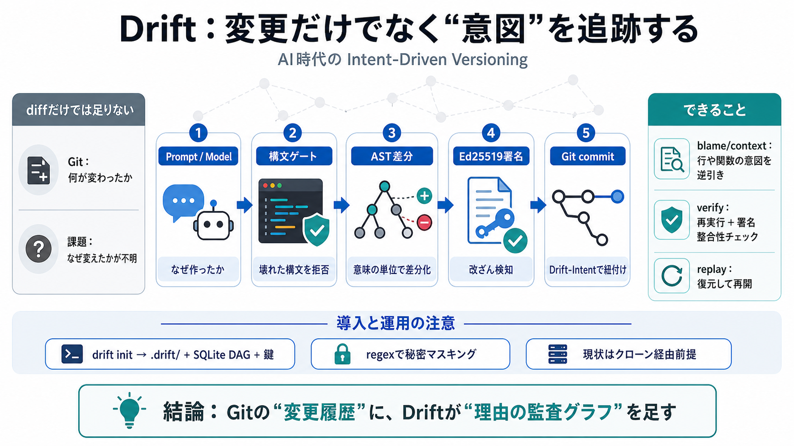

README.md - lilcipherx/drift
Drift is a semantic version-control layer that wraps Git. a cryptographic Ed25519 signature — all linked into an auditab…

Drift is a semantic version-control layer that wraps Git. a cryptographic Ed25519 signature — all linked into an auditab…
| | | | Rust-sitter: Define your entire tree-sitter grammar in Rust code (github.com/hydro-project) | | 127 points by …
# The most trusted code on Earth is being rewritten in Rust ## Fireship 4240000 subscribers 23492 likes ### Description…
For AI agents: visit for an index of all pages formatted in Markdown and endpoints in OpenAPI. Jump to Content Dev.Dr…
“fast database” to ship quickly, the more likely those, often new, developers are to leak keys. [...] The platforms show…